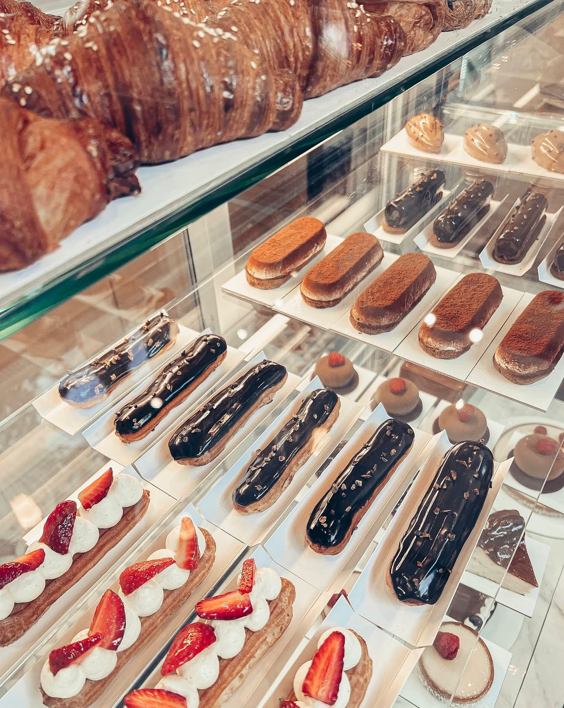
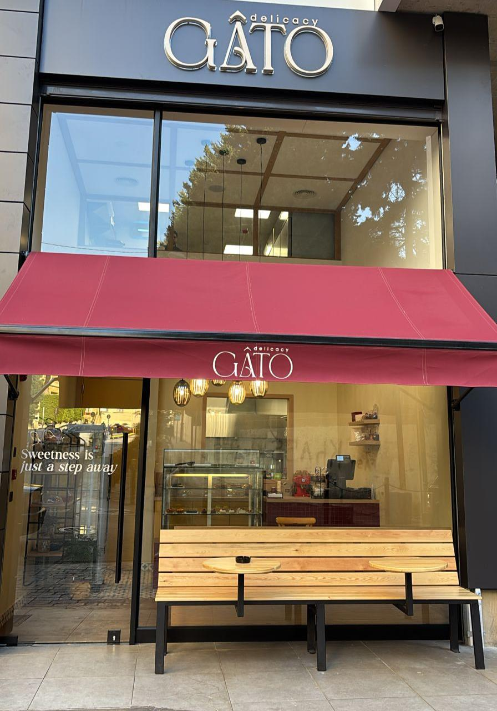
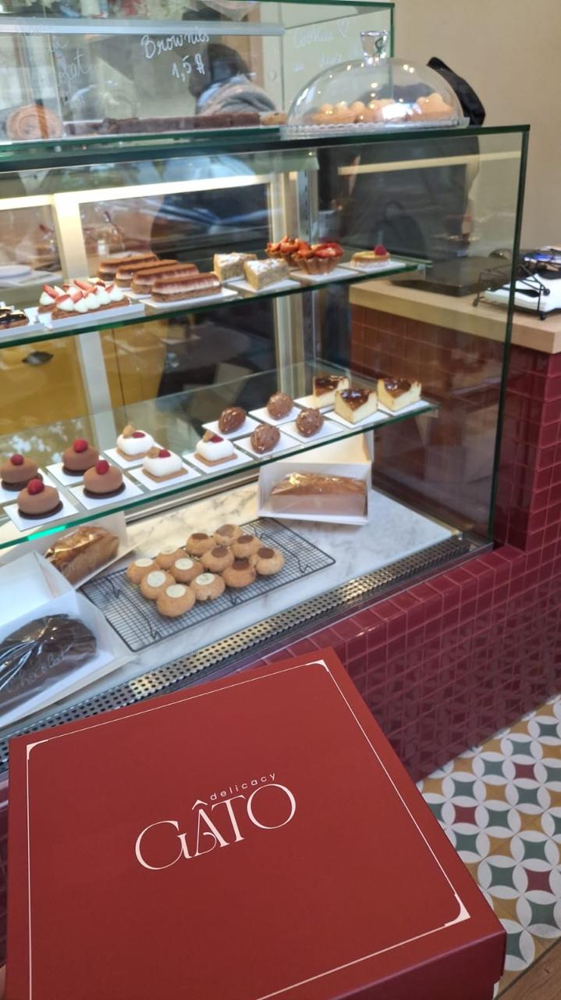
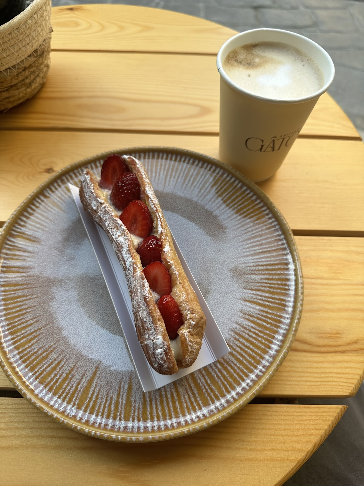
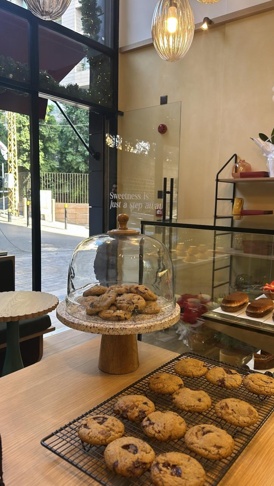
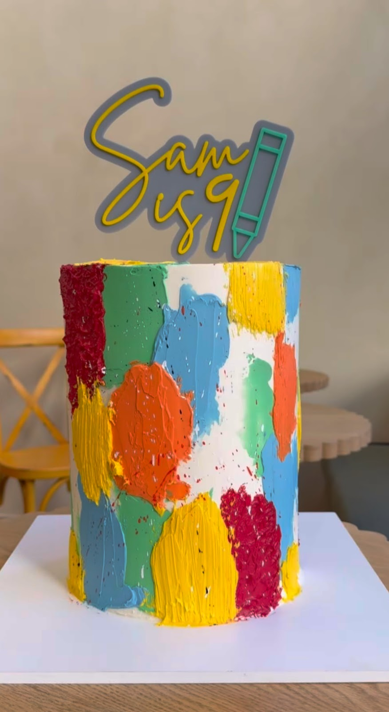

4.8





Absolutely one of the best tiramisu cakes I've had in Lebanon. Every layer was perfectly balanced, the mascarpone was incredibly light and silky, the sponge was moist without being soggy, and the coffee flavor was sooo rich.Catherine Otrakji
I had a great experience at Gato. The desserts were fresh, delicious, and beautifully presented.Maroun Adam
| 7 AM–9 PM | |
| 7 AM–9 PM | |
| 7 AM–9 PM | |
| 7 AM–9 PM | |
| 7 AM–9 PM | |
| 7 AM–9 PM | |
| 9 AM–9 PM |
Dar Al Nasra, Achrafieh, Beirut
+961 71 995 912